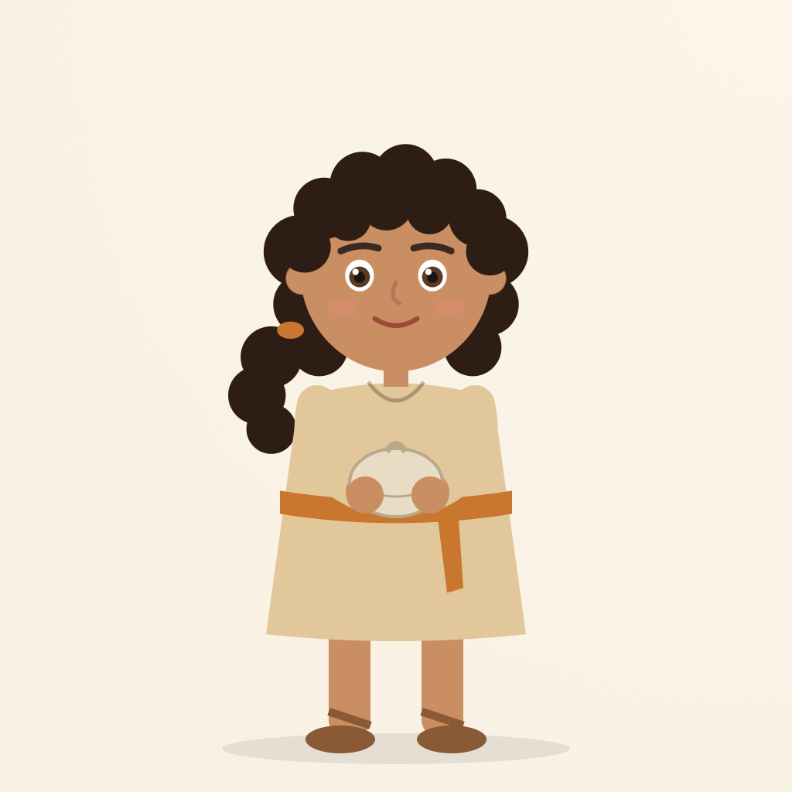
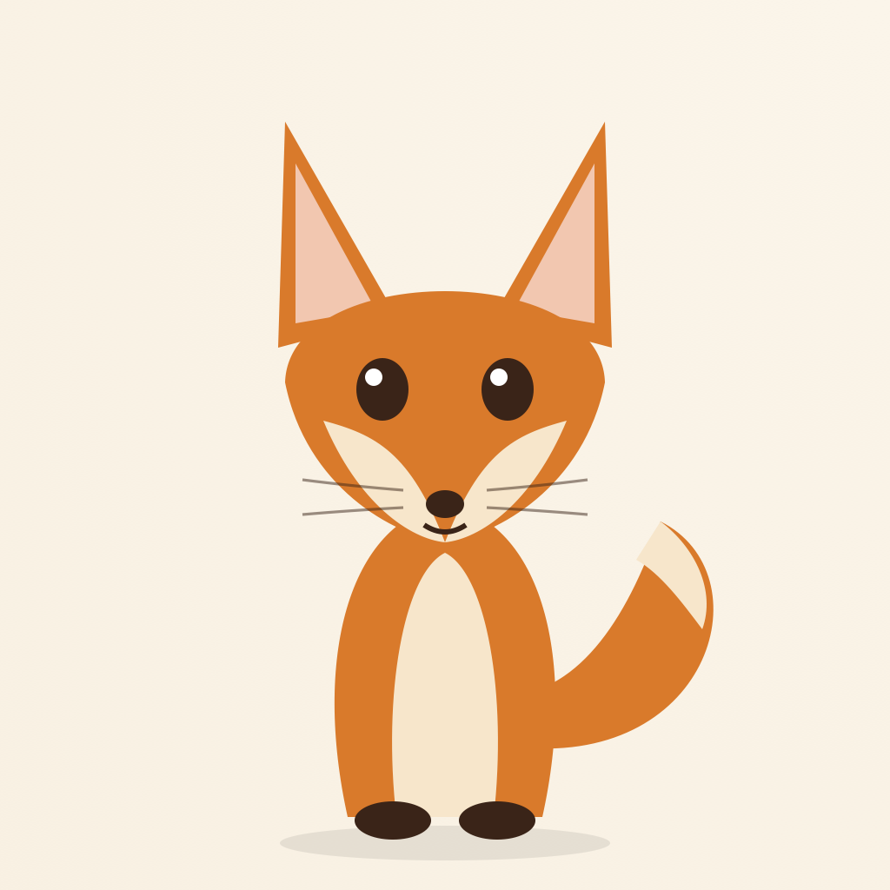
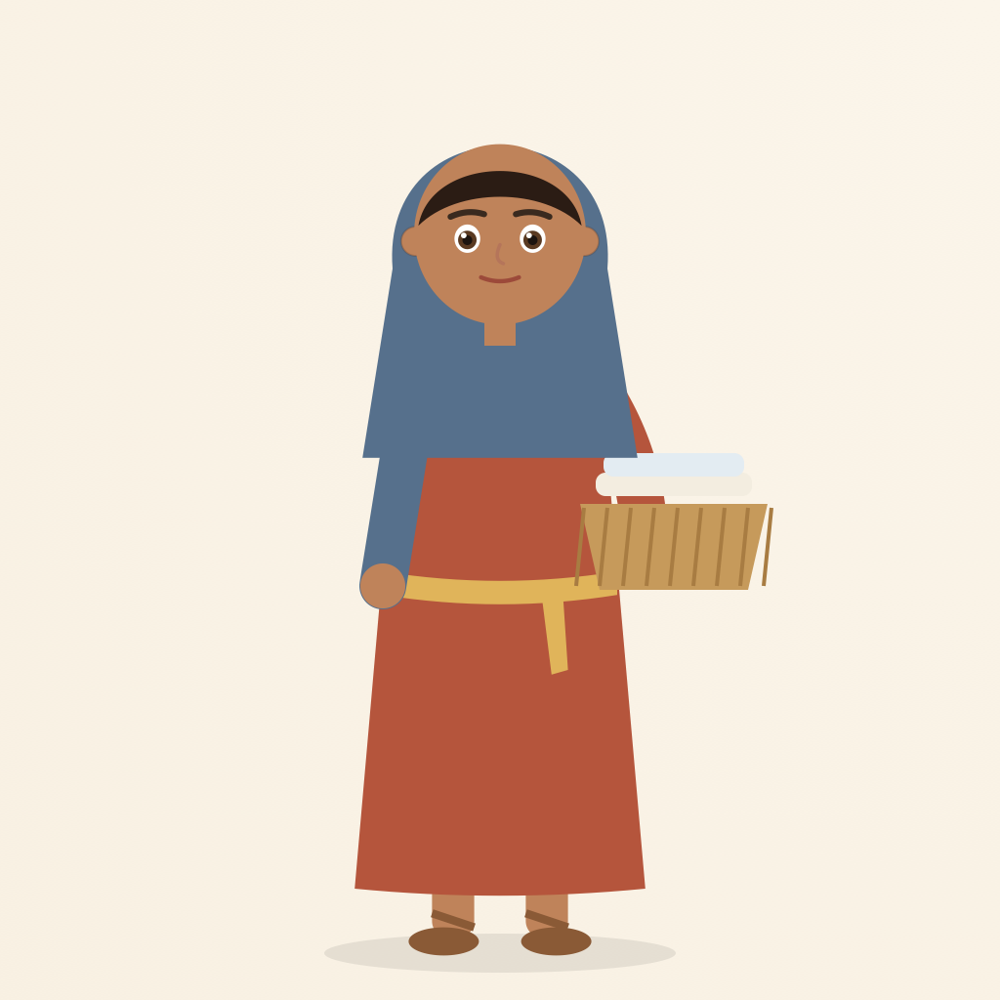
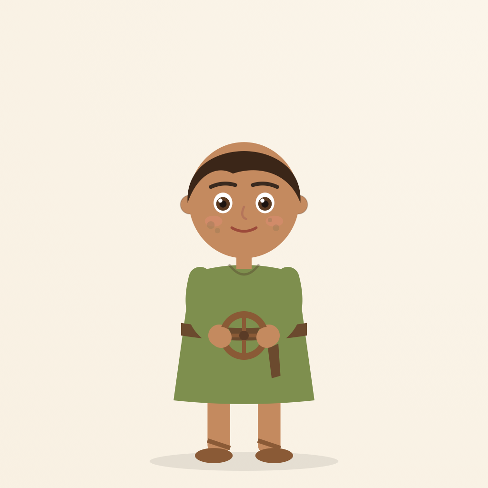
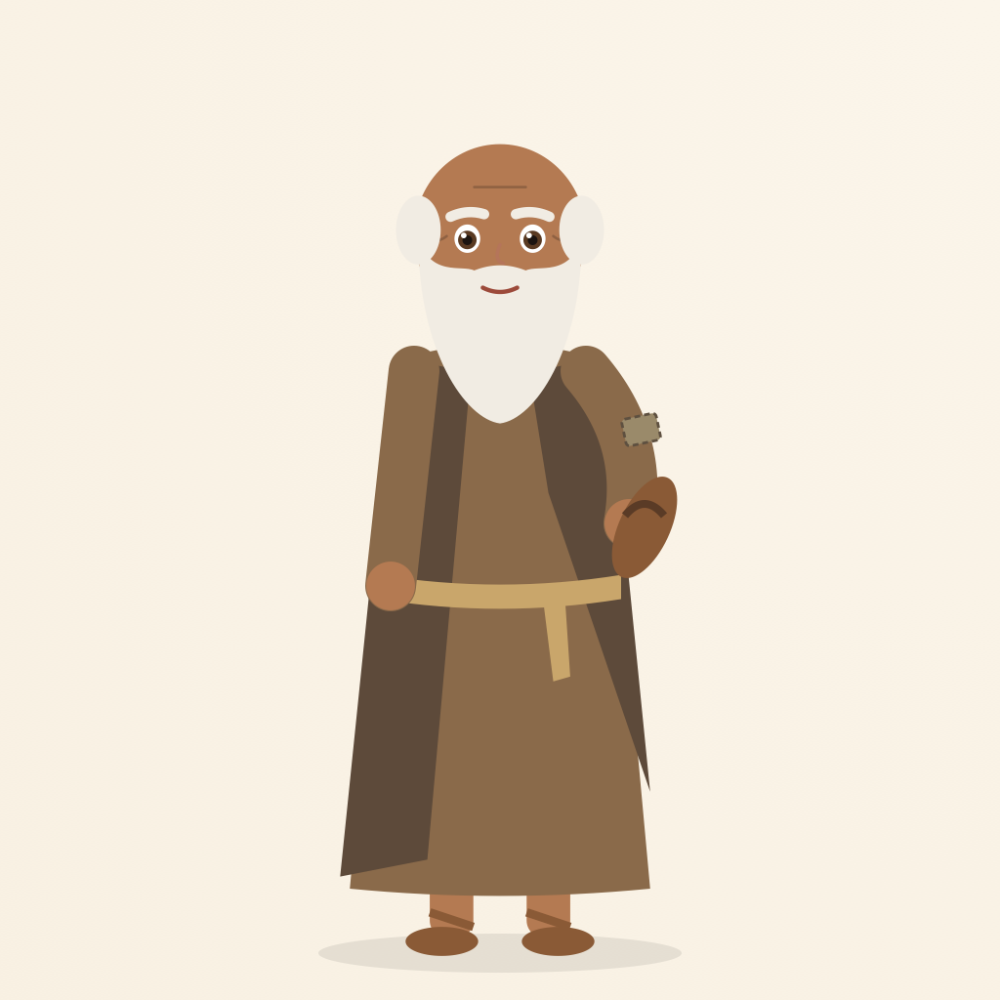
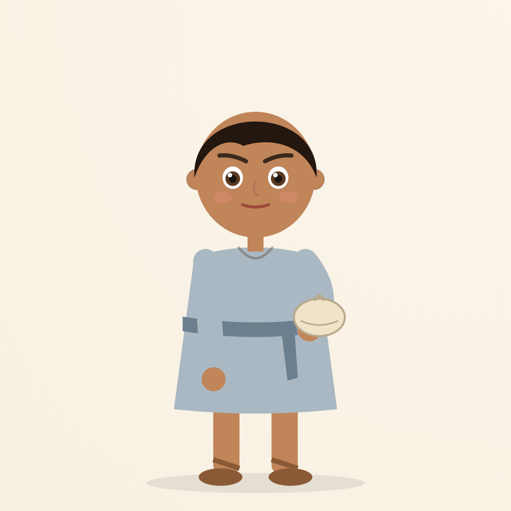
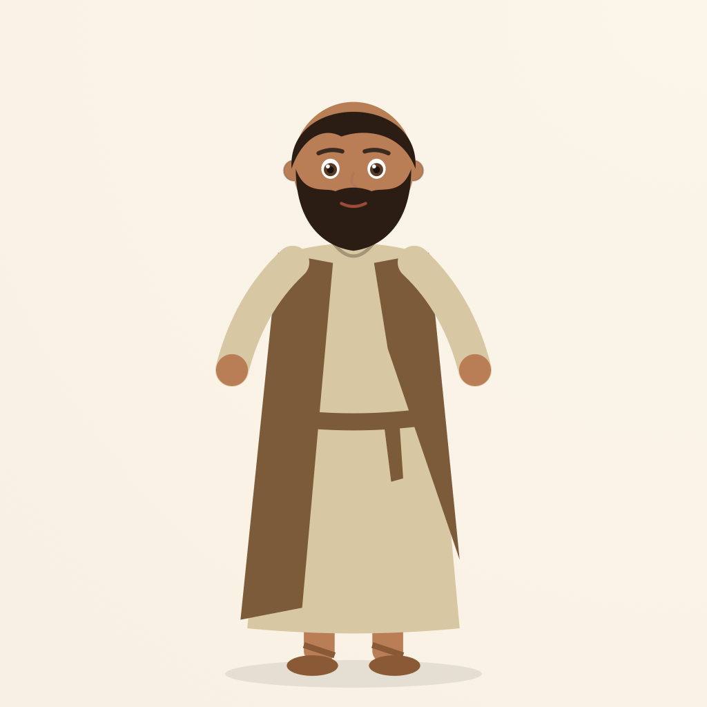
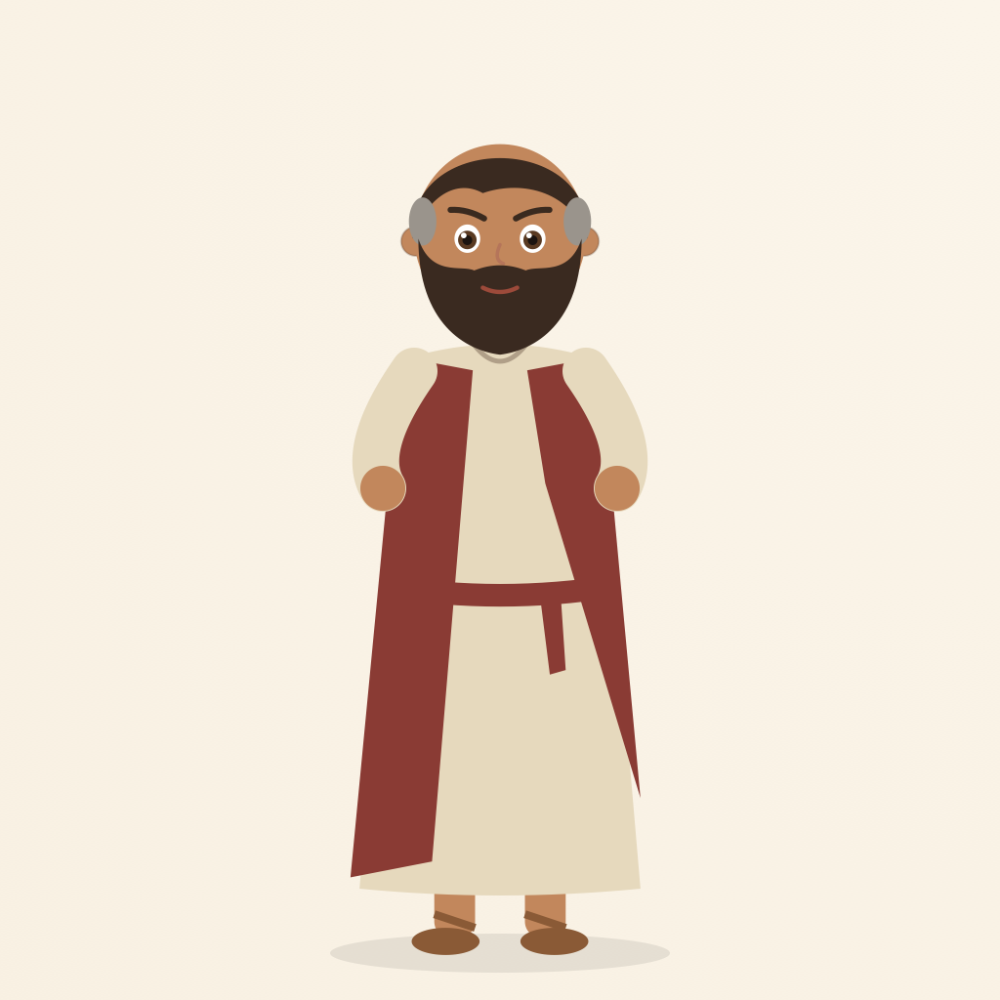
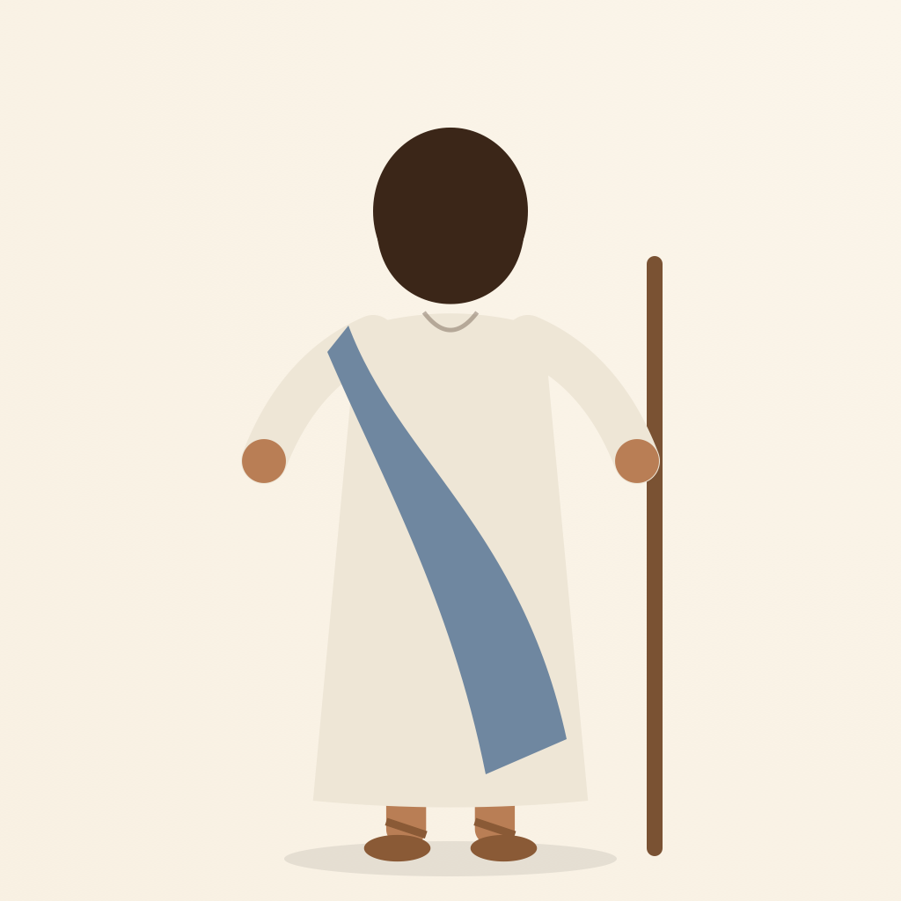

Little Witnesses: "The Smallest Lunch". Proposed designs: full body and head close-up for each
character, as Seedance reference images. Replace with final artwork in characters.json.


Miri
Lead; a young village girl who has three honey cakes
From the script: Young girl; carries a small cloth bundle of three honey-date cakes; later the linen basket.
Design: About 8 years old, warm brown skin, dark curly hair tied back loosely with an ochre tie, brown eyes, sand-coloured tunic with an ochre sash, holding a small cloth bundle.
Image prompt
Character reference of Miri: About 8 years old, warm brown skin, dark curly hair tied back loosely with an ochre tie, brown eyes, sand-coloured tunic with an ochre sash, holding a small cloth bundle. full body, front view, neutral standing pose, plain warm parchment background, warm, painterly 2D storybook animation style, soft textured brushwork, gentle natural light, ancient Galilee setting, simple handwoven clothing, no text, no logo, no watermark.


Nim
Miri's small fox companion
From the script: A small fox (never a dog); oversized ears, twitching nose, tail, whiskers.
Design: Small orange fox with oversized ears, cream chest and muzzle, big dark eyes, bushy tail with a cream tip, sitting upright.
Image prompt
Character reference of Nim: Small orange fox with oversized ears, cream chest and muzzle, big dark eyes, bushy tail with a cream tip, sitting upright. full body, front view, neutral standing pose, plain warm parchment background, warm, painterly 2D storybook animation style, soft textured brushwork, gentle natural light, ancient Galilee setting, simple handwoven clothing, no text, no logo, no watermark.


Ima
Miri's mother
From the script: Comes from the doorway with a basket of folded linen; warm but firm.
Design: Woman in her thirties, warm brown skin, dark hair under a muted blue head covering, terracotta dress with a golden sash, holding a basket of folded linen on her hip.
Image prompt
Character reference of Ima: Woman in her thirties, warm brown skin, dark hair under a muted blue head covering, terracotta dress with a golden sash, holding a basket of folded linen on her hip. full body, front view, neutral standing pose, plain warm parchment background, warm, painterly 2D storybook animation style, soft textured brushwork, gentle natural light, ancient Galilee setting, simple handwoven clothing, no text, no logo, no watermark.


Tav
Village boy with a broken toy cart
From the script: A small boy with dust on his cheeks; his toy cart has one wooden wheel off.
Design: About 6 years old, warm brown skin, short dark hair, dust on his cheeks, olive-green tunic, holding a small wooden cart wheel.
Image prompt
Character reference of Tav: About 6 years old, warm brown skin, short dark hair, dust on his cheeks, olive-green tunic, holding a small wooden cart wheel. full body, front view, neutral standing pose, plain warm parchment background, warm, painterly 2D storybook animation style, soft textured brushwork, gentle natural light, ancient Galilee setting, simple handwoven clothing, no text, no logo, no watermark.


Saba
Saba Elior, the elderly storyteller
From the script: Old; sleeves patched ('more patch than sleeve'); repairs a sandal; eyes twinkle; sits under a fig tree.
Design: Elderly man, white beard, white hair at the sides, bushy white brows, kind smile, brown robe with a darker mantle and a visibly patched sleeve, holding a sandal.
Image prompt
Character reference of Saba: Elderly man, white beard, white hair at the sides, bushy white brows, kind smile, brown robe with a darker mantle and a visibly patched sleeve, holding a sandal. full body, front view, neutral standing pose, plain warm parchment background, warm, painterly 2D storybook animation style, soft textured brushwork, gentle natural light, ancient Galilee setting, simple handwoven clothing, no text, no logo, no watermark.


Yonah
The boy with five barley loaves and two fish
From the script: A boy about Miri's age; careful, bright-eyed, slightly nervous; small bundle tucked under his arm.
Design: About 8 years old, warm brown skin, short dark hair, bright slightly nervous eyes, pale blue-grey tunic, small cloth lunch bundle tucked under one arm.
Image prompt
Character reference of Yonah: About 8 years old, warm brown skin, short dark hair, bright slightly nervous eyes, pale blue-grey tunic, small cloth lunch bundle tucked under one arm. full body, front view, neutral standing pose, plain warm parchment background, warm, painterly 2D storybook animation style, soft textured brushwork, gentle natural light, ancient Galilee setting, simple handwoven clothing, no text, no logo, no watermark.


Andrew
Disciple
From the script: A disciple; gentle and steady with the children.
Design: Man in his thirties, short dark hair and beard, kind expression, undyed tunic with a brown mantle, hands open.
Image prompt
Character reference of Andrew: Man in his thirties, short dark hair and beard, kind expression, undyed tunic with a brown mantle, hands open. full body, front view, neutral standing pose, plain warm parchment background, warm, painterly 2D storybook animation style, soft textured brushwork, gentle natural light, ancient Galilee setting, simple handwoven clothing, no text, no logo, no watermark.


Philip
Disciple
From the script: A disciple; worried and practical about feeding the crowd.
Design: Lean man in his late thirties, short dark hair greying at the temples, short beard, worried brows, cream tunic with a deep red mantle.
Image prompt
Character reference of Philip: Lean man in his late thirties, short dark hair greying at the temples, short beard, worried brows, cream tunic with a deep red mantle. full body, front view, neutral standing pose, plain warm parchment background, warm, painterly 2D storybook animation style, soft textured brushwork, gentle natural light, ancient Galilee setting, simple handwoven clothing, no text, no logo, no watermark.


Jesus
Shown only as hands, robe, and silhouette
From the script: Seen from behind and to the side: robe moving in the wind, hands open, hand on a staff. His face is never shown.
Design: Seen from behind only: shoulder-length dark hair, off-white robe, blue-grey mantle over one shoulder, open hands, wooden staff. No face visible.
Image prompt
Character reference of Jesus: Seen from behind only: shoulder-length dark hair, off-white robe, blue-grey mantle over one shoulder, open hands, wooden staff. No face visible. full body seen from behind, face not visible, plain warm parchment background, warm, painterly 2D storybook animation style, soft textured brushwork, gentle natural light, ancient Galilee setting, simple handwoven clothing, no text, no logo, no watermark.